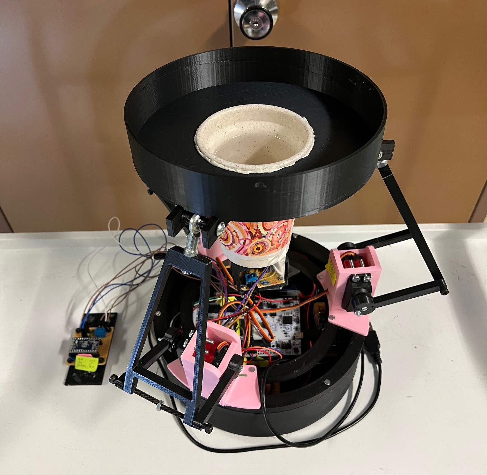
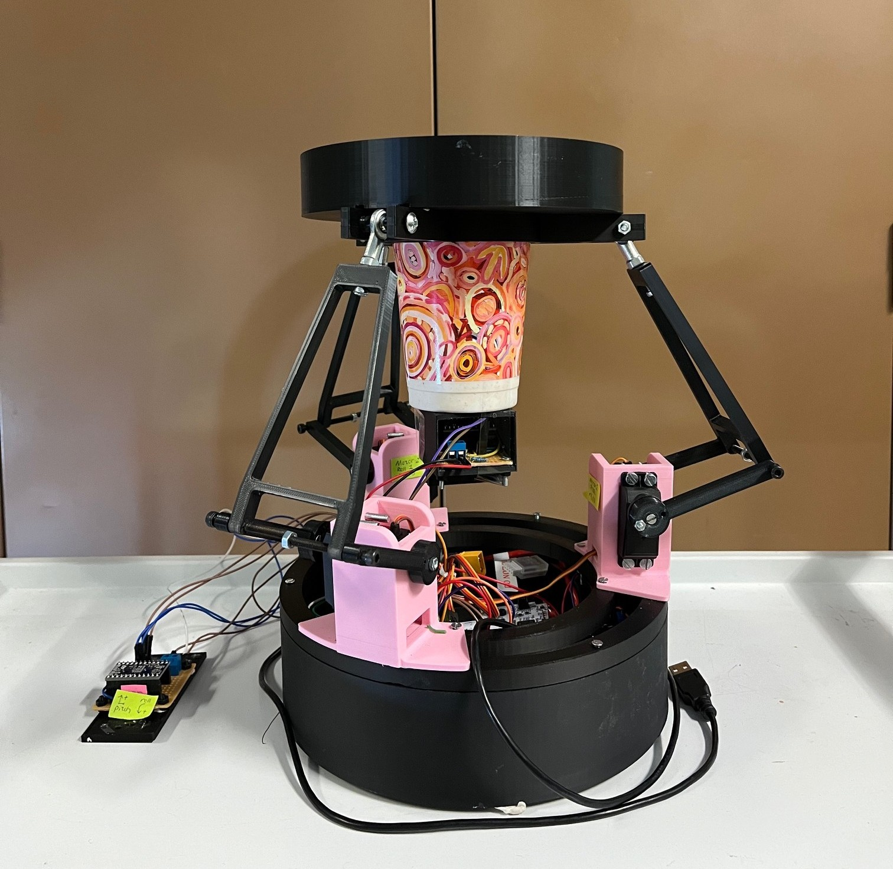

Projects
Final-year University Project (2024)
My Final-year project was an Intra-vehicle Coffee Stabiliser and Anti-spill Device. The goal of the system was to prevent coffee spilling in a moving vehicle under normal driving conditions, such as braking, accelerating, and turning. The system comprised of a sensor suit (Inertial Measurement Unit) and orientation estimation algorithm, a control subsystem (PID controller) implemented on an embedded device, as well as the 3-RRS parallel manipulator mechanical structure (3-D printed platform and servo motors). My project report is being re-written for a journal publication - soon to be shared here!


(PS, this project won me first place for final-year project in Electronic Engineering at the University of Pretoria :p)
Other University Highlights
Some cool university projects included our ice-cream-truck line-following robot from Robot Race Day (2022) EMK 310, the 128-point FFT on an STM32, the type-AB speaker transistor circuit ENE 410, and the Prac 3 Phase-locked Loop (PLL) EMS 310.


Upcoming projects...
Home-made Roomba with remote Odroid and IoT system -> utilises Docker on a remote Ubuntu server, implementing SLAM techniques (10% complete), Unity art game (5% complete)